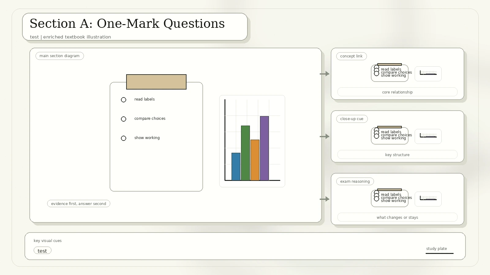
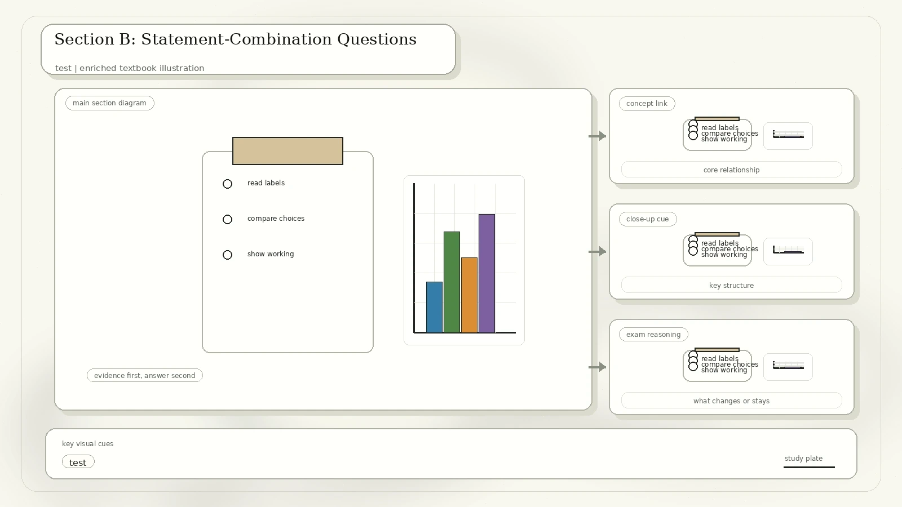

Paper Format
The examination time is 45 minutes. The paper consists of 20 multiple choice questions in two sections.
15 questions, each worth 1 mark. Choose the most suitable answer from four options.
5 statement-combination questions, each worth 2 marks. Decide which numbered statements are correct.
How this conversion works: question wording and diagrams are summarized faithfully from the scan. The answer key is reconstructed from the science content, not from the handwritten marks on the scanned pages.
Section A: One-Mark Questions

| No. | Clean Question From The Scan | Best Answer | Concept Check |
|---|---|---|---|
| 1 | Why cannot growth alone be taken as a defining property of living organisms? | C. Non-living things also grow. | Use multiple life processes, not only one feature. |
| 2 | Count organisms from Hydra, sponges, yeast, earthworm, Planaria, and honey bee that multiply by budding. | B. 3 | Hydra, sponges, and yeast can reproduce by budding. |
| 3 | Which organisms can sense and respond to environmental cues? | D. All of the listed groups. | Response to stimuli is a universal life process, even without a complex nervous system. |
| 4 | Miller-Urey style apparatus with electrodes, condenser, water, and organic compounds: what question was tested? | A. How biomolecules were formed. | The experiment modelled early-Earth chemical synthesis. |
| 5 | Which is not part of the Oparin-Haldane emergence-of-life proposal? | C. Photosynthesis supplied oxygen for early self-copying molecules. | Early oxygen-rich photosynthesis came later, not at the first chemical-origin stage. |
| 6 | What does a rooted phylogenetic tree show? | A. A common ancestor at the base of the tree. | The root represents shared ancestry for all taxa shown. |
| 7 | A, B, C are same class but different orders; C, D, E are same order but different families. Which pair is most homologous? | D. C and E | Same order is a closer classification rank than same class. |
| 8 | Which item is not the same species as Brassica oleracea cultivars cauliflower, kale, and kai-lan? | A. Lettuce | Cauliflower, kale, and kai-lan are Brassica oleracea cultivars; lettuce is different. |
| 9 | A grassland pyramid with about 0.1 billion primary producers supports how many tertiary consumers? | A. 3 | The scan's given pyramid lists 3 top carnivores for about 100 million producers. |
| 10 | Label a terrestrial phosphorus-cycle chart with producers, detritus, soil solution, and litter fall. | A. A = producers, B = detritus, C = soil solution, D = litter fall. | Producers take up phosphate from soil solution; dead matter enters detritus. |
| 11 | Order malnutrition consequences: stored fats used, stored carbohydrates used, body proteins broken down, muscle loss, death. | C. 2, 1, 3, 4, 5 | Carbohydrate stores are used before fat; protein breakdown leads to muscle loss. |
| 12 | Which food-processing step occurs after absorption? | Assimilation: assembling large body molecules from smaller absorbed digestion products. | Absorption moves nutrients into blood; assimilation builds them into body materials. |
| 13 | Why is a three-chambered amphibian heart an advantage over a two-chambered fish heart? | A. Oxygenated blood can be pumped again to reach higher pressure. | Amphibians have partial double circulation. |
| 14 | Order blood pressure from highest to lowest in aorta, arteries, veins, arterioles, venules, capillaries, venae cavae. | C. Aorta, arteries, arterioles, capillaries, venules, veins, venae cavae. | Pressure falls with distance from the heart and through resistance vessels. |
| 15 | Which substances should not be present in healthy urine: blood, glucose, protein, potassium? | C. Blood, glucose, and protein. | Potassium ions can be excreted normally; blood, glucose, and significant protein suggest problems. |
Section B: Statement-Combination Questions
Section B uses options A to D: A means statements 1, 2, and 3 are correct; B means 1 and 2 only; C means 2 and 3 only; D means 1 only.

| No. | Question Focus | Best Answer | Explanation |
|---|---|---|---|
| 16 | Functions of gastric hydrochloric acid: pepsin effectiveness, killing bacteria, denaturing amylase. | A | All three statements are correct for the acidic stomach environment. |
| 17 | Fetal hemoglobin versus adult hemoglobin oxygen saturation graph. | B | Fetal hemoglobin reaches 50% saturation at lower oxygen partial pressure and has higher oxygen affinity; the "twice as saturated at 40 mm Hg" claim is not supported. |
| 18 | High estrogen, progesterone, hCG, and prolactin in a woman in her 40s. | D | The hormone pattern suggests pregnancy. It does not imply ovulation within one week or no recent sexual activity. |
| 19 | Botulinum toxin and Botox effects. | D | Botox minimizes wrinkles by inhibiting synaptic transmission to some facial muscles. It is not a long-term memory mechanism and does not reduce anxiety by binding a GABA receptor. |
| 20 | Basal, reflex, and emotional tears. | C | Reflex tears wash away irritants and emotional tears can contain more stress hormones. The statement that basal tears are only produced when eyes are open is too absolute. |
Answer Key
C, B, D, A, C
A, D, A, A, A
C, assimilation, A, C, C
A, B, D, D, C
How To Review This Paper
Review living things, budding, stimuli, origin-of-life experiments, and phylogeny.
Check classification rank, Brassica cultivars, trophic pyramids, and phosphorus cycling.
Review digestion, blood pressure, urine composition, hemoglobin, hormones, Botox, and tears.
Wait one day, redo only missed questions, then explain why each wrong option fails.